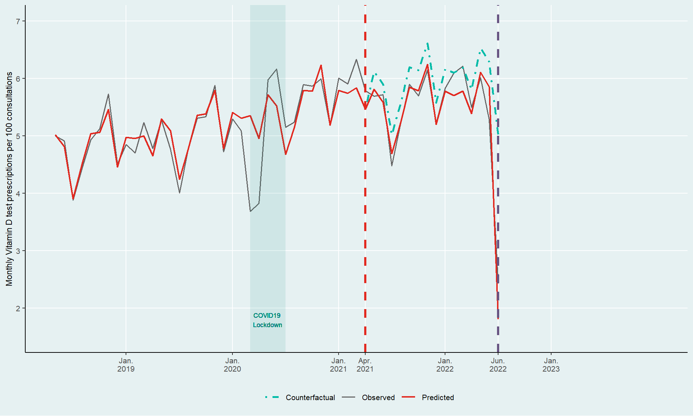
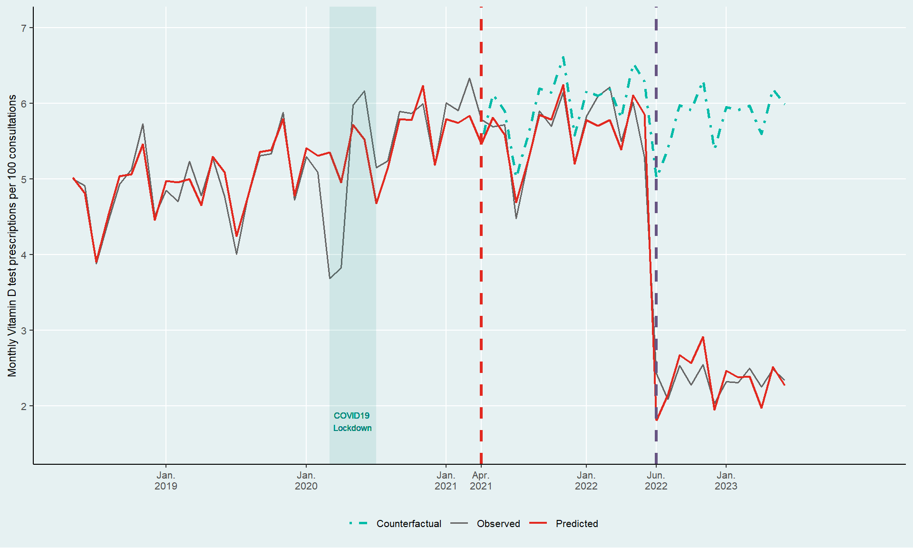

Guest lecture Data Science Fundamentals
On roads travelled, unnecessary shots, and the data that connects them
Aurélien Sallin, PhD
2025-10-29
My journey to data science
Choice #1: Philo vs Econom(etr)ics
- I studied philosophy to understand stuff.
- Then I discovered econometrics and causal inference.
- I liked the idea of using causal inference to guide policy making.
Choice #2: PhD vs Work
- As a MA student assistant, I was initiated to research in applied econ.
- I went for a PhD in Econometrics and Finance at HSG.
- PhD was a great experience, and was intensely rich in learning.*
* Don’t google “phd and mental health” (there is a fascinating 2025 study about it in the Journal of Health Economics).
Choice #3: Academia vs Industry
- Crucial for me: impact on real-life decisions, develop leadership skills, have fun, …
- Now: Senior Economist/Data Scientist at a major Swiss Healthcare company.
Claims Data: My ü•ñ and üßà
Claims Data
In my everyday life, I work mostly with claims data
- digital trail of every medical interaction in Switzerland
- billing data
- >130mio invoices per year
Every medical act gets coded…
… linked to a patient …
… who makes a claim for reimbursement…
… to a health insurer.
Personal patient information
Standardized medical treatment and pricing
In a nutshell
Contain billing information
- Each medical act is coded and mapped to a price.
- Follow patients over time.
- Comprehensive view of patient healthcare utilization patterns.
Follow strict standards
- Structure and standards are defined for data exchange.
- XML standards for electronic data exchange (see example)
What can we use these data for?
Use case: low value care and Vit D tests üíâ
The Problem: Low-Value Care and Vitamin D
- We want to effectively reduce low-value care
- Services with limited patient benefit but high costs (How much❓)
- Services with limited patient benefit but high costs (How much❓)
- Vitamin D testing is a perfect example
- Clinical guidelines consistently advise against routine testing for low-risk individuals
- Yet testing rates almost doubled between 2013-2020 in Switzerland
- We studied which policy tools are most effective
- Our findings made national headlines
Switzerland’s Policy Response
April 2021: “Smarter Medicine Initiative”
- Added vitamin D testing to “procedures to avoid” list
- Clear recommendation: No routine measurement for patients without risk factors
July 2022: Coverage Restriction
- Federal Office of Public Health introduced limitatio
- Limited reimbursement for routine tests
- Patients pay out-of-pocket for unnecessary tests
Our Data and Methods
- Data Source: Mandatory health insurance claims from SWICA
- ~10% of Swiss population
- 3,600+ general practitioners and group practices
- Adult patients with ≥1 consultation (2018-2023)
- Method: Interrupted Time-Series Analysis
- Compares observed data with counterfactual trend
- Accounts for patient characteristics and clinical indications
Some Time-series Modelling
\[\begin{aligned} {y_{it}} &= {\beta _0} + {\beta _1}{t_{it}} + {\beta _2}{x_t} + {\beta _3}\left( {{t_{it}} \times {x_t}} \right) \\&\quad+ {\beta _4}{Z_{it}} + {\alpha _i} + {\gamma _t} + { \in _{it}} \end{aligned}\]
Linear model with time variable, treatment variables, individual controls and seasonality patterns
● Grey line = Actual vitamin D tests prescribed monthly
● Red line = Statistical model predictions
Rising Prescriptions Despite Low Value
Vitamin D test prescriptions rose by 20% between 2018 and 2021
April 2021: Clinical Recommendations
Smarter Medicine recommendation shows a slight downward trend
Revealing the Counterfactual
The dashed line shows what would have happened without the recommendation.
Result: The clinical recommendation reduced tests by 6% in 12 months
July 2022: Financial Incentives Enter

Federal Office of Public Health restricts coverage
Patients now pay out-of-pocket for routine tests
Financial Incentives: The Game Changer

The number of tests per consultation drops by 58% in 6 months
The Bottom Line: Major Healthcare Savings

Healthcare system savings:
- 15.65 million CHF in 2022 alone
- 1.8 CHF per Swiss resident
Key Findings and Policy Implications
Main Results
- Clinical recommendations: -6% reduction
- Financial incentives: -58% reduction
- No unintended consequences on patient care
Policy Lessons
- Financial incentives far more effective than guidelines alone
- But removing coverage cannot be the default solution
- High administrative burden for physicians
We just published our results
Full Study: (Sallin et al. 2025) üîó
- Multi-disciplinary team:
- Health services research, SWICA
- Institute of Primary Care, University of Zürich
- Institute of Health Economics and Health Policy, Bern University of Applied Sciences
Where to go from here? üåé
Where to go from here?
- Learn until you’ve developed an Intuition.
- Invest in Communication.
- Explore and show your work.
Keep in touch
Thanks.
References
Sallin, Aurélien, Daniel Ammann, Caroline Bähler, Tobias Müller, Stefan Neuner-Jehle, Oliver Senn, and Eva Blozik. 2025. “The Impact of Choosing WiselyTM Recommendations and Insurance Coverage Restrictions on the Provision of Low-Value Care: An Interrupted Time Series Analysis of Vitamin d Tests.” BMC Health Services Research 25 (1): 1359.
Aurélien Sallin, PhD